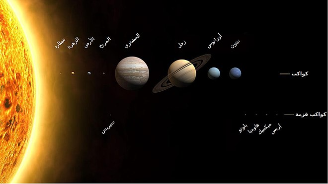

المجموعة الشمسية هي نظام كوني فريد يتكون من الشمس، النجم المركزي الذي يُعد مصدر الضوء والحرارة الأساسي، ومجموعة من الأجرام السماوية التي تدور حولها بفعل قوة الجاذبية. تبدأ هذه الأجرام بالكواكب الثمانية الرئيسية، التي تنقسم إلى كواكب صخرية داخلية مثل عطارد، الزهرة، الأرض، والمريخ، وهي تتميز بسطوحها الصلبة وقربها من الشمس، وكواكب غازية خارجية مثل المشتري، زحل، أورانوس، ونبتون، التي تُعرف بأحجامها الضخمة وأجوائها الغازية. إلى جانب الكواكب، تحتوي المجموعة الشمسية على كواكب قزمة مثل بلوتو وسيريس، التي تتميز بصغر حجمها ومساراتها المدارية المختلفة. كما تدور أقمار عديدة حول الكواكب، ومنها القمر الذي يدور حول الأرض، والذي يلعب دوراً مهماً في استقرار النظام البيئي. تشمل المجموعة الشمسية أيضًا المذنبات، وهي أجسام جليدية تدور في مدارات بيضاوية طويلة، والكويكبات التي تتجمع بشكل رئيسي في حزام الكويكبات الواقع بين مداري المريخ والمشتري. بالإضافة إلى ذلك، توجد النيازك والشهب التي تدخل الغلاف الجوي للأرض أحياناً، والغبار والغازات بين الكوكبية التي تملأ الفراغ بين الأجرام السماوية. تقع المجموعة الشمسية على بعد نحو 30 ألف سنة ضوئية من مركز مجرة درب التبانة، كما تبعد نحو 20 سنة ضوئية فوق مستوى المجرة,وتحديدًا في ذراع حلزوني خارجي لمجرة درب التبانة،وبالتالي فإن الأرض وكواكب المجموعة الأخرى لا تدور داخل مستوى مجرة درب التبانة، بل تميل نحو 64 درجة عن مستواها تُعد المجموعة الشمسية نظامًا قديمًا تشكل قبل حوالي 4.6 مليار سنة، وهي جزء صغير من مجرة درب التبانة. ورغم صغر حجمها بالنسبة للكون الواسع، فإنها تظل موطنًا للعديد من الظواهر الطبيعية الرائعة التي تُذهل العلماء وتثير فضول البشر لمعرفة المزيد عن أسرار الكون ومكانة الأرض فيه.
